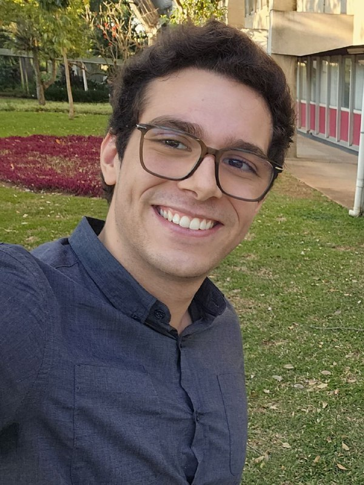

João Lobo
Ph.D. student, Department of Computer Science, University of Warwick
I study the function spaces induced by neural networks, focusing on which functions they can represent and learn efficiently. I am currently interested in the tension between representational efficiency, where the representations obtained are compact, and computational efficiency, where they can be found optimally with ease.
I am a second year PhD student at the University of Warwick supervised by Fanghui Liu (Shanghai Jiao Tong University) and Long Tran-Thanh (University of Warwick).
I am broadly interested in the problem of learning in neural networks and in pure mathematics, particularly in functional analysis and the geometry of Banach spaces.
Before coming to Warwick, I obtained my Bachelor's and Master's degree in Computer Science at Instituto de Matemática e Estatística in Universidade de São Paulo (IME-USP) under the supervision of Marcelo Finger.
Publications
Talks and teaching
Teaching
- Fall 2026
Algorithms / University of Warwick
- Spring 2025
Machine Learning / IME-USP
- Fall 2025
Computational Music / IME-USP
- Fall 2024
Numerical Methods for Computer Science / IME-USP